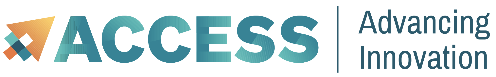
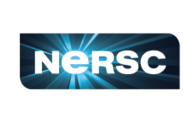
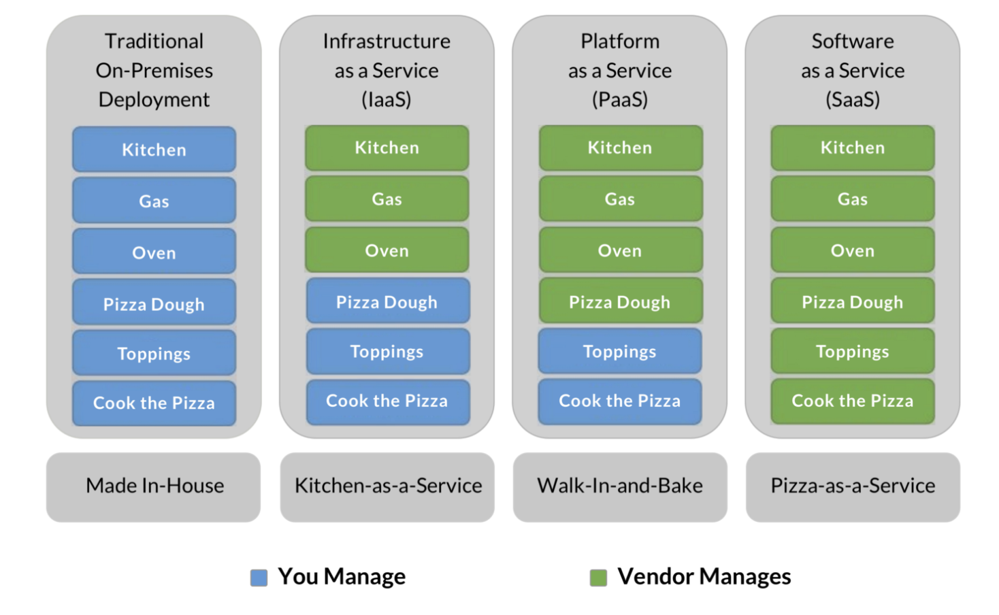
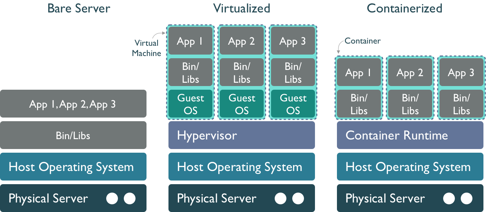

17 What is Cloud Computing Anyways?
17.1 Learning Objectives
- Learn different uses of the term cloud computing
- Understand the services of cloud providers
- Gain familiarity with containerized computing
- Work hands-on running a docker container, and building your own and running it
17.2 What is cloud computing anyways?
The buzzword we all hear, but maybe don’t quite understand. ..
Cloud computing is a lot of things… but generally speaking:
Cloud computing is the delivery of on-demand computer resources over the Internet. Or just “using someone else’s computer”.
“The Cloud” is powered by a global network of data centers which house the hardware (servers), power, and backup systems, etc. These data centers and infrastructure are managed by cloud providers
Cloud computing services are typically offered using a “pay-as-you-go” pricing model, which in some scenarios may reduce capital expenses.
Cloud computing is a technology approach to using lightweight virtualization services to share large physical computing clusters across many users
Check out this article by Ingrid Burrington in The Atlantic, Why Amazon’s Data Centers are Hidden in Spy Country, for some interesting insight into one of the largest cloud provider’s data centers.
17.3 Commercial clouds
There are a lots of different cloud computing platforms, but the big ones are:
Amazon Web Services (AWS)
Google Cloud Platform (GCP)
Microsoft Azure

There are many other cloud service providers that offer varying degrees of infrastructure, ease of use, and cost. Check out DigitalOcean, Kamatera, and Vultr to start.
17.4 Academic clouds



Federal agencies in the US and other institutions also support massive computing facilities supporting cloud computing. While there are too many to fully list, programs such as the National Science Foundation’s ACCESS program, the Department of Energy’s National Energy Research Scientific Computing Center (NERSC), and the CyVerse platform provide massive cloud computing resources to academic and agency researchers. The huge advantage is that these resources are generally free-for-use for affiliated researchers. When you need access to massive CPU and GPU hours, an application for access to these facilities can be extremely effective.
And the Pangeo project is creating an open community focused on maintaining, supporting, and deploying open infrastructure for cloud computing. They support key scientific software packages used throughout the cloud community, including xarray and dask, and generally are broadening capacity for large-scale, impactful research.
17.4.1 Cloud deployment options
Different cloud service and deployment models offer a suite of options to fit client needs
Service Models: When you work in “the cloud” you’re using resources – including servers, storage, networks, applications, services, (and more!) – from a very large resource pool that is managed by you or the cloud service provider. Three cloud service models describe to what extent your resources are managed by yourself or by your cloud service providers.
Infrastructure as a Service (IaaS)
Platform as a Service (PaaS)
Software as a Service (SaaS)
Deployment Models: Cloud deployment models describe the type of cloud environment based on ownership, scale, and access.
Private Cloud
Public Cloud
Hybrid Cloud
17.5 Service Models
Infrastructure as a Service (IaaS) provides users with computing resources like processing power, data storage capacity, and networking. IaaS platforms offer an alternative to on-premise physical infrastructure, which can be costly and labor-intensive. In comparison, IaaS platforms are more cost-effective (pay-as-you-go), flexible, and scalable.
One example of IaaS is Amazon EC2, which allows users to rent virtual computers on which to run their own computer applications (e.g. R/RStudio).
Platform as a Service (PaaS) provides developers with a framework and tools for creating unique applications and software. A benefit of SaaS is that developers don’t need to worry about managing servers and underlying infrastructure (e.g. managing software updates or security patches). Rather, they can focus on the development, testing, and deploying of their application/software.
One example of SaaS is AWS Lambda, a serverless, event-driven compute service that lets you run code for virtually any type of application or backend service without provisioning or managing servers.
Software as a Service (SaaS) makes software available to users via the internet. With SaaS, users don’t need to install and run software on their computers. Rather, they can access everything they need over the internet by logging into their account(s). The software/application owner does not have any control over the backend except for application-related management tasks.
Some examples of SaaS applications include Dropbox, Slack, and DocuSign.
17.6 An Analogy: Pizza as a Service

Image Source: David Ng, Oursky
17.7 Virtual Machines and Containers
As servers grow in size, we have increasing amounts of power and resources, but also a larger space to manage. Traditional operating systems use a common memory and process management model that is shared by all users and applications, which can cause some issues if one of the users consumes all of the memory, fills the disk, or causes a kernel panic. When running on a bare server, all of the processes from all users are mixed together and are not isolated, so the actions of one process can have large consequences for all of the others.

Virtual machines Virtualization is an approach to isolate the environments of the various users and services of a system so that we can make better use of the resource, and protect processes. In a virtualized environment, the host server still runs a host operating system, which includes a hypervisor process that can mediate between guest hosts on the machine and the underlying host operating system and hardware. This is effective at creating multiple virtual machines (VMs) running side-by-side on the same hardware. From the outside, and to most users, virtual machines appear to be a regular host on the network, when in fact they are virtual hosts that share the same underlying physical resources. But it also results in a fair amount of redundancy, in that each virtual machine must have its own operating system, libraries, and other resources. And calls pass through the guest operating system through the hypervisor to the physical layer, which can impose a performance penalty.
Containers A further step down the isolation road is to use a Container Runtime such as containerd or Docker Engine. Like virtual machines, containers provide mechanisms to create images that can be executed by a container runtime, and which provide stronger isolation among deployments. But they are also more lightweight, as the container only contains the libraries and executables needed to execute a target application, and not an entire guest operating system. They also are built using a layered file system, which allows multiple images to be layered together to create a composite that provides rich services withot as much duplication. This means that applications run with fewer resources, start up and shut down more quickly, and can be migrated easily to other hosts in a network.